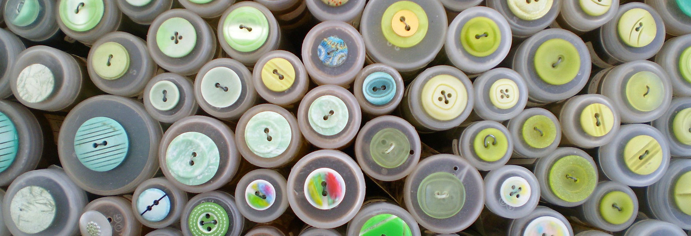

U skladu sa Zakonom o računovodstvu, pravno lice odnosno preduzetnik je obavezan da vrši popis imovine i obaveza. Pravna lica i preduzetnici dužni su, takođe, da pre sastavljanja finansijskih izveštaja, usaglase međusobna potraživanja i obaveze što se dokazuje odgovarajućom ispravom – IOS (poverilac dostavlja dužniku).
Popis vrši popisna komisija ili jedno lice (u slučaju malog pravnog lica), a Odluku o formiranju popisne komisije odnosno imenovanju lica donosi direktor. U komisiju za popis ne mogu biti određena lica koja rukuju odnosno koja su zadužena za imovinu koja se popisuje (npr.blagajnik, magacioner i sl.) i njihovi neposredni rukovodioci, kao ni lica koja vode analitičku evidenciju te imovine. Direktor odnosno lice koje on ovlasti odgovorno je za organizaciju i pravilnost popisa. Odlukom se određuje dan pod kojim će komisija vršiti popis, vreme za popis i rokove dostavljanja Izveštaja o izvršenom popisu i Popisne liste (potpisane od strane članova komisije za popis) nadležnom organu društva (direktoru).
Komisija za popis dužna je da pre početka popisa sačini Plan rada po kome će vršiti popis. Komisija ne sme da raspolaže računovodstvenim podacima o količinama pre završetka popisa (može da raspolaže samo popisnim listama iz računovodstva koje sadrže samo nomenklaturne podatke o imovini koja se popisuje).
Rad komisije za popis obuhvata:
Imovina čija je vrednost umanjena zbog oštećenja, neispravnosti, zastarelosti i sl. unosi se u posebne popisne liste ili u posebne kolone popisnih lista radi lakšeg utvrđivanja viškova i manjkova.
Imovina koja na dan popisa nije zatečena kod pravnog lica (imovina na putu i u inostranstvu, imovina data na poslugu, zajam, čuvanje, popravku i sl.) unosi se u posebne popisne liste na osnovu verodostojne dokumentacije ako do dana završetka popisa nisu primljene popisne liste od pravnog lica kod koga se ta imovina nalazi.
Popis gotovine u blagajni I gotovinskih ekvivalenata, hartija od vrednosti i stranih sredstava plaćanja vrši se brojanjem prema apoenima i upisivanjem utvrđenih iznosa u posebne popisne liste. Gotovina i hartije od vrednosti koje se nalaze na računima i depo-računima popisuju se na osnovu izvoda.
Popis finansijskih plasmana, potraživanja i obaveza vrši se prema stanju u poslovnim knjigama, pod uslovom da je njihovo usklađivanje sa dužnicima i poveriocima izvršeno najmanje jednom godišnje i da o tome postoji verodostojna isprava (IOS).
Finansijske plasmane, potraživanja i obaveze za koje ne postoji uredna dokumentacija popisna komisija iskazuje u posebnim popisnim listama.
Komisija za popis sastavlja Izveštaj o izvršenom popisu i dostavlja nadležnom organu društva (direktoru) najkasnije 30 dana pre dana sastavljanja godišnjeg računa. Izveštaj sadrži: stvarno i knjigovodstveno stanje imovine i obavez, utvrđene razlike, uzroke neslaganja, predloge za prebijanje manjkova i viškova nastalih po osnovu zamena, način naknađivanja manjkova i prihodovanja viškova, otpisivanja neupotrebljivih sredstava, ispravke sumnjivih i spornih potraživanja, otpisivanja zastarelih potraživanja, prihodovanja zastarelih obaveza i dr., način knjiženja, primedbe i objašnjenja radnika o utvrđenim razlikama i sl. Za tačnost popisa i izveštaja o popisu odgovorni su članovi komisije za popis.
Naležni organ (direktor) donosi Odluku o usvajanju izveštaja o izvršenom popisu. Izveštaj o izvršenom popisu, popisne liste i Odlukama nadležnog organa pravnog lica o popisu, dostavlja se na knjiženje radi usklađivanja knjigovodstvenog stanja sa stvarnim stanjem.